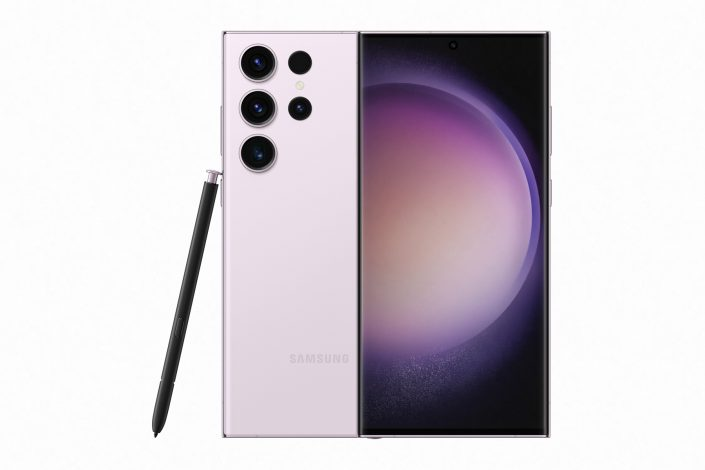

El Samsung Galaxy S24 Ultra pasa a ser el smartphone más poderoso de
Samsung, por primera vez con chasis de titanio. En cuanto a sus
características, cuenta con una pantalla AMOLED de 6.8 pulgadas a
resolución QHD+ y tasa de refresco de 120Hz, protegida por Gorilla Glass
Armor. La cámara posterior tiene un sensor principal de 200MP, una
cámara telefoto periscópica de 50MP con zoom óptico 5x, otra cámara
telefoto de 10MP con zoom 3x, y una cámara ultrawide de 12MP con
autofoco, siendo la cámara selfie de 12MP, también con foco automático.
Por dentro, encontramos un procesador Snapdragon 8 Gen 3 for Galaxy,
acompañado de 12GB de RAM con hasta 1TB de almacenamiento, y una batería
de 5000 mAh que puede cargar a 45W de potencia por cable y15W en forma
inalámbrica, completando sus características con parlantes stereo,
lector de huellas bajo pantalla, stylus S Pen, llamadas satelitales de
emergencia, resistencia al agua IP68 y Android 14 con siete años de
actualizaciones.